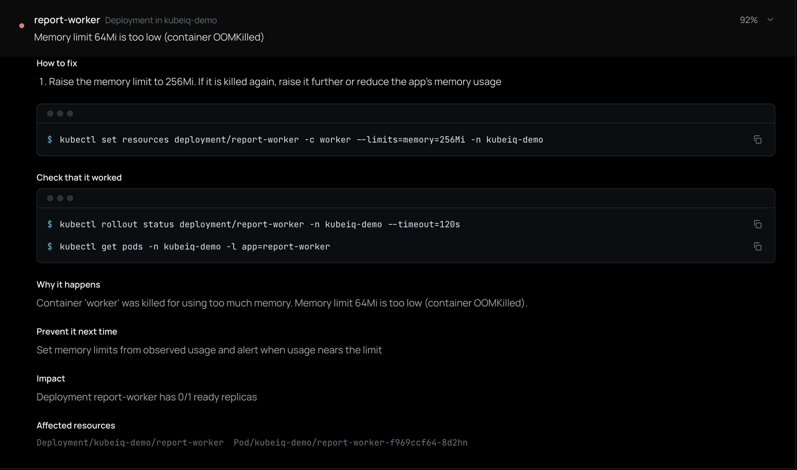
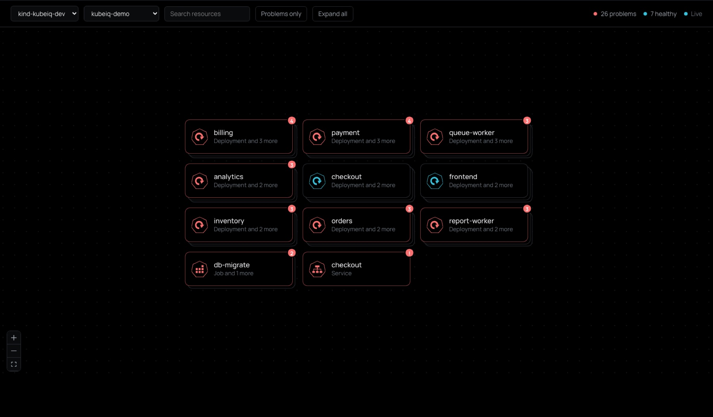
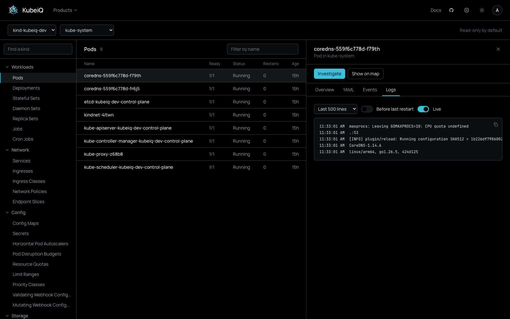
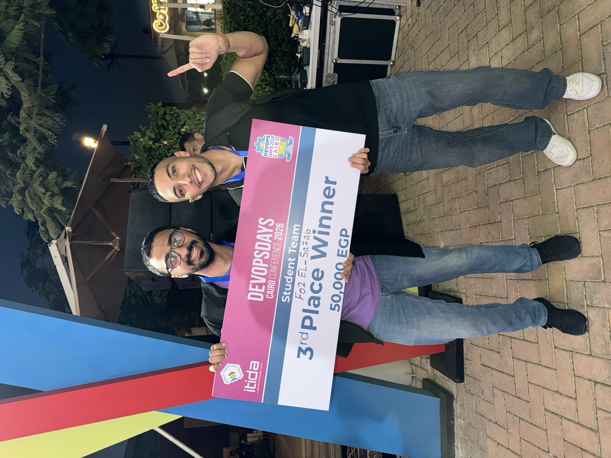
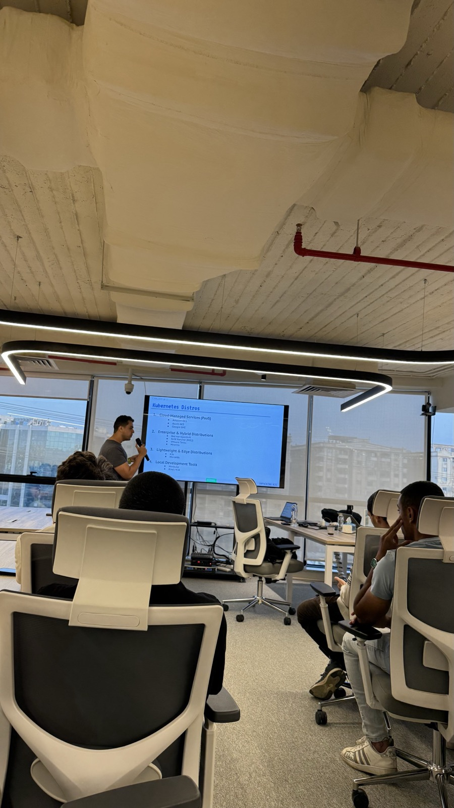

Ahmed Wagdy, DevOps, platform and MLOps engineer in Cairo, reports on a year of running AI infrastructure in production and building KubeiQ.
A year inproduction
The year in figures
Measured where it was measured: on cloud bills, on pipelines, on load times and on a scoreboard.
KubeiQ
Find out why your Kubernetes workloads break, and get the exact command to fix them. KubeiQ is the open-source, self-hosted AI for Kubernetes operations that I’m building: one install, every tool, any model.
A pod is in CrashLoopBackOff at 3 a.m. You open a terminal, run describe, read events, pull previous logs, check the ConfigMap, then the Secret. KubeiQ does that walk for you and answers with one line naming the exact resource and setting, the evidence behind it, a confidence score, commands you can paste with your real names and values, and the checks that prove the fix worked.
$ curl -fsSL https://raw.githubusercontent.com/Ahmedwagdymohy/KubeiQ/main/deploy/install.sh | sh
How an investigation runs
- CollectRead-only collectors gather bounded evidence through the official Kubernetes Python client. Secrets are read as metadata only.
- RedactPasswords, tokens and keys are masked before anything can reach a model.
- DetectDeterministic detectors recognise known failures in seconds and group symptoms under one root cause.
- InvestigateFor the rest, a tool-calling agent checks logs, configs and related resources, with schema-validated output.
- FixCommands are built from the evidence with your real names, plus the checks that prove the fix.


Any model, or none
KubeiQ talks to models through LiteLLM, the same gateway I run at Incorta, so OpenAI, Anthropic, Gemini, Bedrock, Azure, OpenRouter and a local Ollama all work. Without a model it still finds known failures and gives the fix.
What it catches before any model runs
| Containers | CrashLoopBackOff, OOMKilled, missing env vars, failed init containers |
| Images | ImagePullBackOff, bad tags, registry auth |
| Config | Missing ConfigMaps, Secrets and keys |
| Scheduling | Pending pods, requests no node can fit |
| Health | Failing readiness and liveness probes |
| Rollouts | Stuck rollouts, failed Jobs |
| Network | Selectors that match no pods, DNS failures |
| Nodes | NotReady nodes |
Safe to point at production
- Read-only by default. Ready-made RBAC needs only read access.
- Secret values never read. Secrets are fetched as metadata only.
- Redaction before any model call. Logs and evidence are masked first.
- Changes are opt-in. An admin switch, editors only, a confirmation and an audit record for every attempt.
- Access by project. Users see only their clusters and namespaces.
The AI platform
Incorta’s engineers needed one sanctioned way to reach language models. I deployed LiteLLM as the company-wide AI gateway for production and staging on GCP, backed by Cloud SQL, with central access control, a quota for each team and usage tracking.
When high-volume usage logs began crashing its dashboard, I built a central observability layer on Langfuse. It ingests OpenTelemetry traces from the dev and prod gateways across GCP projects over Private Service Connect.
I developed the internal MLOps portal in React and Python, with real-time API monitoring and automated quota requests.
Then came the agents. An on-call agent built on OpenClaw and Claude Sonnet lives in Slack and Telegram: it spots incidents early, watches the daily builds and walks through root causes, with automated fixes. An AIOps API on Cloud Run functions lets agents read cluster data from the core Incorta application, and I hardened an internal build of OpenCode with company security controls before it went company-wide.
Under all of it sit NVIDIA DGX Spark machines joined to a K3s cluster as GPU nodes, monitored with Prometheus and Grafana, and dedicated CPU and GPU node pools on GKE for GoodMem and the Reranker.
The platform under it
Production Kubernetes clusters running business-critical workloads, and the tooling that keeps testing and production reliable, scalable and available.
- A terminal in the browserA Cloud Shell-style terminal with multiple sessions and a remote file browser for managing remote machines.
- Jira from the machineIssues reported straight from remote machines, cutting out the manual triage and logging.
- Reusable TerraformModules for networking, Kubernetes, databases and compute provisioning.
- An automated DevOps portalPython Lambda functions, Step Functions and SSM Agent that install and configure Incorta, import daily builds and trigger pipelines on demand.
- ObservabilityPrometheus and Grafana monitoring and alerting across CI/CD and infrastructure.
- Production KubernetesClusters on EKS and GKE kept healthy for production and testing.
A security gate in one line
A container image scanning pipeline on Jenkins and Trivy that writes CycloneDX and SPDX SBOMs for production images: the groundwork for supply-chain compliance and tracing every CVE.
// Jenkinsfile — any delivery pipeline
@Library('devops-shared') _
securityScan(
image: 'incorta/analytics:2026.10',
severity: 'HIGH', // NONE | CRITICAL | HIGH
sbom: ['cyclonedx', 'spdx']
)I packaged the scanner as a reusable Jenkins shared-library step, so a team adds the gate with one line instead of copying a stage between repositories.
Severity gating supports both report-only and blocking modes, so a pipeline can watch first and enforce once its images are clean.

DevOpsDays Cairo 2026, third place in the student track, team Fo2 El-Sa7ab.
Agents under siege
Sandbox Siege is a chaos engineering framework that tests an AI agent’s judgement before it gets real cloud access. We built it at the ITIDA DevOpsDays Hackathon and placed third of more than 140 teams.
A fake cloud with traps. Agents do normal tasks in simulated AWS (LocalStack Pro with IAM enforcement), seeded with realistic resources, permissions, secrets and security traps.
Every call intercepted. A Python gateway (FastAPI, boto3) records each tool call, forwards it to LocalStack and runs security and behaviour detectors.
A gate in CI. Agent scores become a pass or fail in GitHub Actions, with a React dashboard streaming results over Server-Sent Events.
Every action gets two verdicts. Pick one an agent tried:
“His contributions were a massive part of why we succeeded.”Ghassan Elgendy, Cloud & Solutions Architect, hackathon teammate
Evidence, six times faster
For All In Functional Health, a US health company, I built a multi-tenant genomic evidence platform end to end. For any gene or disease it returns ranked variants, related research and an evidence profile for each study.
Loading 644,000 rows
Streaming parsers, chunked PostgreSQL COPY with a commit per chunk, and indexes built after the load. Release refreshes rebuild only what changed.
Python, Flask and Supabase (PostgreSQL and object storage), deployed on Railway. Automated pipelines pull from nine public biomedical APIs and datasets, score the risk of each variant, retrieve full-text papers as XML, JSON or PDF, and keep strict provenance for every record.
An LLM stage classifies each study, cached on model and prompt version, so re-runs return the same answer at no extra cost. A pipeline’s state survives crashes and page reloads mid-job.
Sensitive health data is protected with PostgreSQL row-level security, service-role-only access, private buckets with insert-only upload policies and time-limited signed URLs.
I also shipped three patient intake apps in Next.js and TypeScript: multi-step forms with Zod validation across about 90 fields, private lab-file uploads and email notifications through Resend, deployed on Vercel.
Where I’ve worked
Five teams in two years, from a brokerage in Cairo to a health company in the United States.
| IncortaNew Cairo | DevOps, Platform & MLOps Engineer. The AI gateway, GPU nodes, agents, the security gate and production Kubernetes. | Aug 2025 – now |
| All In Functional HealthRemote, USA | AI Automation & Full-Stack Engineer, contract. The genomic evidence platform and patient intake apps. | Jul – Oct 2026 |
| Alpinum ConsultingRemote, UK | Software Engineering Instructor, part-time. Taught FreeRTOS and Zephyr RTOS with hands-on labs on Linux servers. | Jun – Aug 2026 |
| Inpro.saRemote, KSA | DevOps Engineer. Azure DevOps pipelines with Gitflow and branch policies, ArgoCD with an umbrella chart, Grafana dashboards and alerts for Kubernetes. | Jun – Sep 2025 |
| EFG HermesCairo | SRE / DevOps Intern. CI/CD on Azure DevOps, Nginx as reverse proxy and load balancer, Prometheus, Grafana and Jaeger. | Oct – Dec 2024 |
Built on the side
Projects that started as questions: how far down can a cluster scale, and how fast can it come back up?
Event-driven autoscaling with KEDA
An event-driven platform on GKE where Pub/Sub messages scale deployments from zero to ten pods in seconds. The cluster, VPC, IAM and Workload Identity are all Terraform.
KEDA · GKE · Pub/Sub · Terraform
Serverless Kubernetes with Knative
Serverless container workloads on Knative Serving behind Kourier, with scale-to-zero autoscaling that takes idle cost to nothing.
Knative · Kourier · Kubernetes
Three-tier web app on EKS
A React frontend and Flask services on AWS EKS, with PostgreSQL on RDS for persistent storage.
AWS EKS · RDS · React · Flask
Qt Factory
A C++ desktop app with sign-in and role-based access, real-time sensor dashboards with configurable thresholds, live graphs and weather data. A top-ten global finalist in the Qt World competition.
C++ · Qt · Scythe Studio
- Based in
- Cairo, Egypt (GMT+3)
- Studying
- Electronics & Computer Engineering, Cairo University
- Working at
- Incorta
Outside the terminal
I’m in my final year of Electronics and Computer Engineering at Cairo University, and I’ve spent most of it shipping infrastructure for real teams at the same time.
I learn in public: hackathons, meetups, teaching RTOS to engineers abroad, and a cloud certification whenever a gap shows up in what I know. Sport and charity work fill the rest of the week.

The record
Certifications earned alongside full-time work, and the competitions that tested them.
Certifications
- Professional Cloud ArchitectGoogle Cloud
- Solutions Architect – AssociateAWS
- Associate Cloud EngineerGoogle Cloud
- CloudOps EngineerAWS
- Cloud PractitionerAWS
- Kubernetes and Cloud Native AssociateCNCF
- MLOpsKodeKloud
- Azure Fundamentals (AZ-900)Microsoft
Recognition
- 3rd place of 140+ teams, ITIDA DevOpsDays Hackathon2026
- Top 10 global finalist, Qt World CompetitionQt
Skills
- Kubernetes: EKS, GKE, K3s, bare metal, edgeFluxCD, ArgoCD
- Infrastructure as codeTerraform, CloudFormation, Ansible
- ObservabilityPrometheus, Grafana, Loki, Tempo, OTel
- SecuritySOPS, KMS, Trivy, SBOMs
Letters of reference
He quickly became someone the team relied on, not just “the intern.” A true DevOps geek who can also build products end to end.Mohamed Ghayaty, Senior Engineering Manager, Incorta. Managed Ahmed directly.